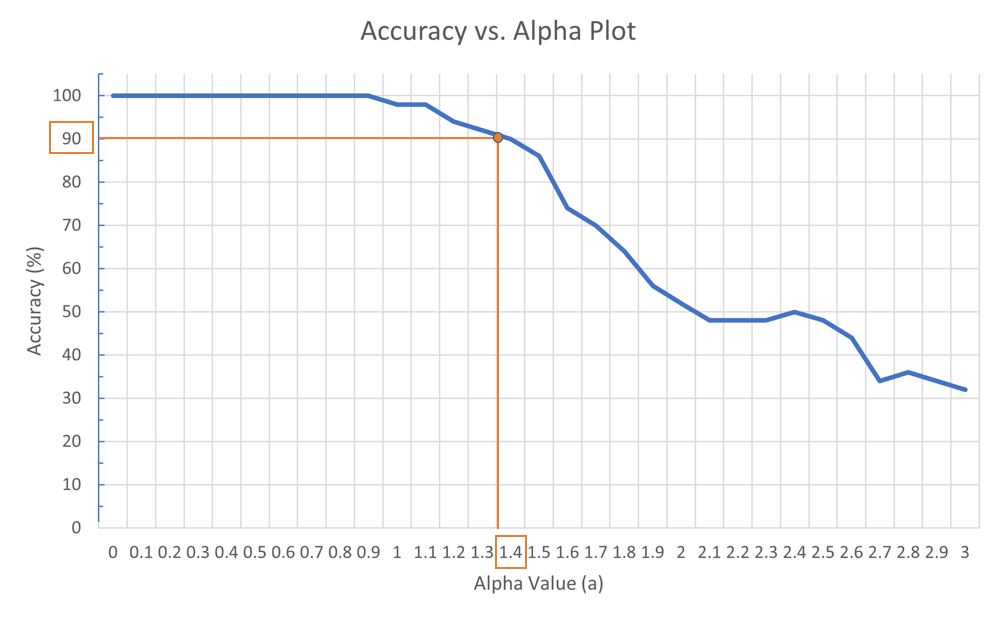

Phone Key DTMF Decryption with Additive Noise
April 2022
EN.520.214 Signals and Systems
Objectives:
Skills Applied & Outcomes:
Comments:
This is one of the most challenging and complete individual projects I've done. I learned to do my best under a tight deadlind, maximize efficiency in a code/file organizations, and clarify my scientific writing.

Accuracy vs. noise gain.
Accuracy vs. key press duration.
Accuracy vs. reverberation time.
Noisy signal with alpha = 4; FFT of a single tone; phone key DTMF.
Workflow of the algorithm: band-pass filer -> energy band binary labels -> FFT of each interval.

Another illustration of the above steps.
Randomly-generated phone key sequences and their decode outputs at various alpha values. Most digits are still correct.